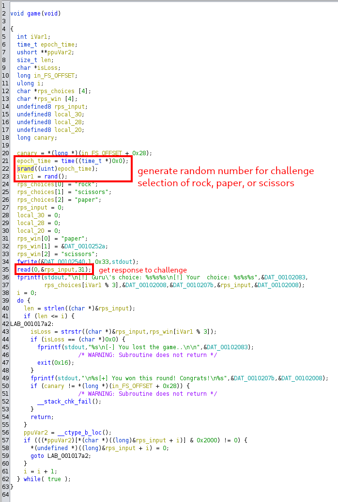
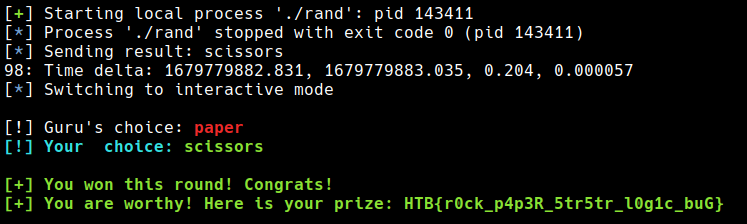

HTB Apocalypse 2023 - Janken
Problem Description
Janken is an easy rated Misc challenge.
As you approach an ancient tomb, you're met with a wise guru who guards its entrance. In order to proceed, he challenges you to a game of Janken, a variation of rock paper scissors with a unique twist. But there's a catch: you must win 100 rounds in a row to pass. Fail to do so, and you'll be denied entry.
Analysis
Analyzing the decompilation of the binary (janken), we find a loop for the 100 rounds mentioned in the prompt running the following game function.

Solution
Here's an excerpt of the pwntools script used to solve the challenge.
io = start()
info(io.recvuntil(b'>> ')) # prompt
io.sendline(b'1')
rps = ['rock', 'scissors', 'paper']
rps_win = {
'rock': 'paper',
'paper': 'scissors',
'scissors': 'rock',
}
def wait_for_next_second(epoch_time):
while int(time.time()) <= epoch_time:
time.sleep(0.05)
for _i in range(0, 99):
epoch_time = epoch_time = time.time() # time before asking for prompt
if epoch_time - int(epoch_time) > 0.8:
wait_for_next_second(epoch_time)
info(io.recvuntil(b'>> ')) # wait for prompt
time2 = time.time()
rand_io = process(['./rand', f"{epoch_time}"])
r = int(rand_io.readline().strip())
enemy_answer = rps[r % 3]
answer = rps_win[enemy_answer]
info(f"Sending result: {answer}")
time3 = time.time() # time before sending response
io.sendline(bytes(answer, encoding="utf-8"))
time4 = time.time() # time after sending response
print(f"{_i}: Time delta: {epoch_time:.3f}, {time2:.3f}, {(time2 - epoch_time):.3f}, {(time4-time3):3f}")
io.interactive()
Flag

We have our flag!
HTB{r0ck_p4p3R_5tr5tr_l0g1c_buG}